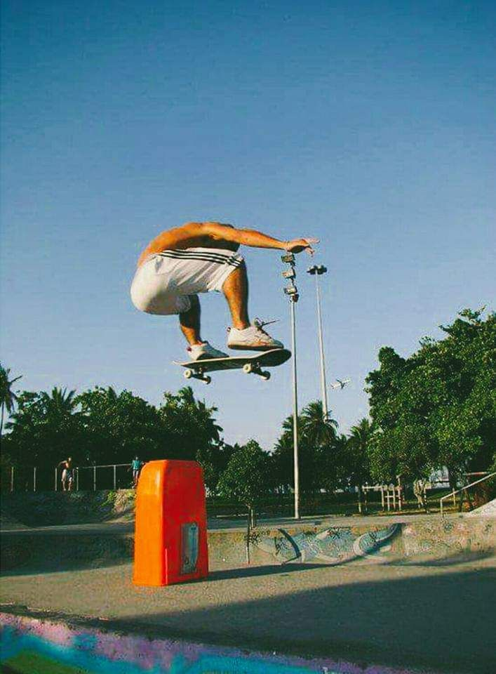
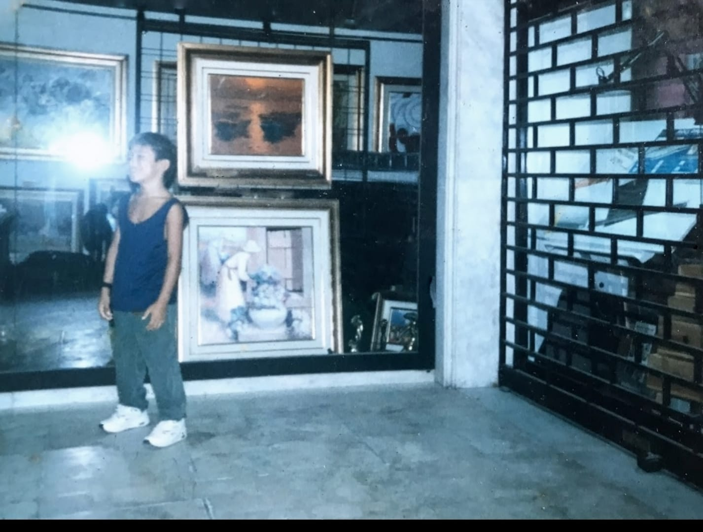
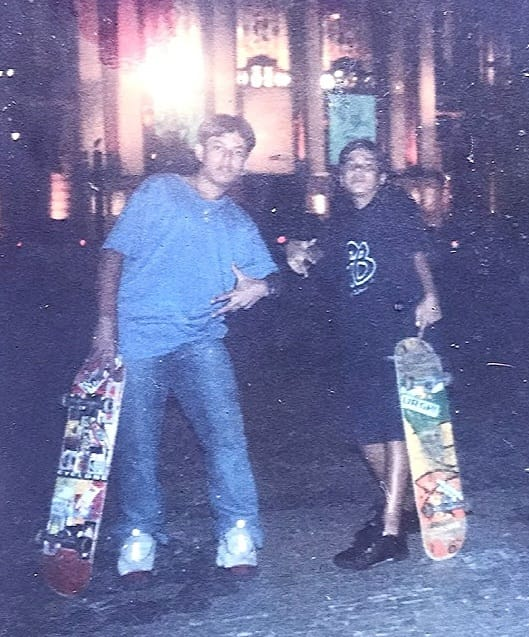
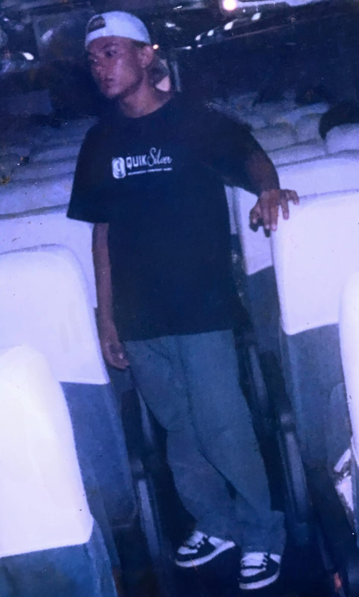
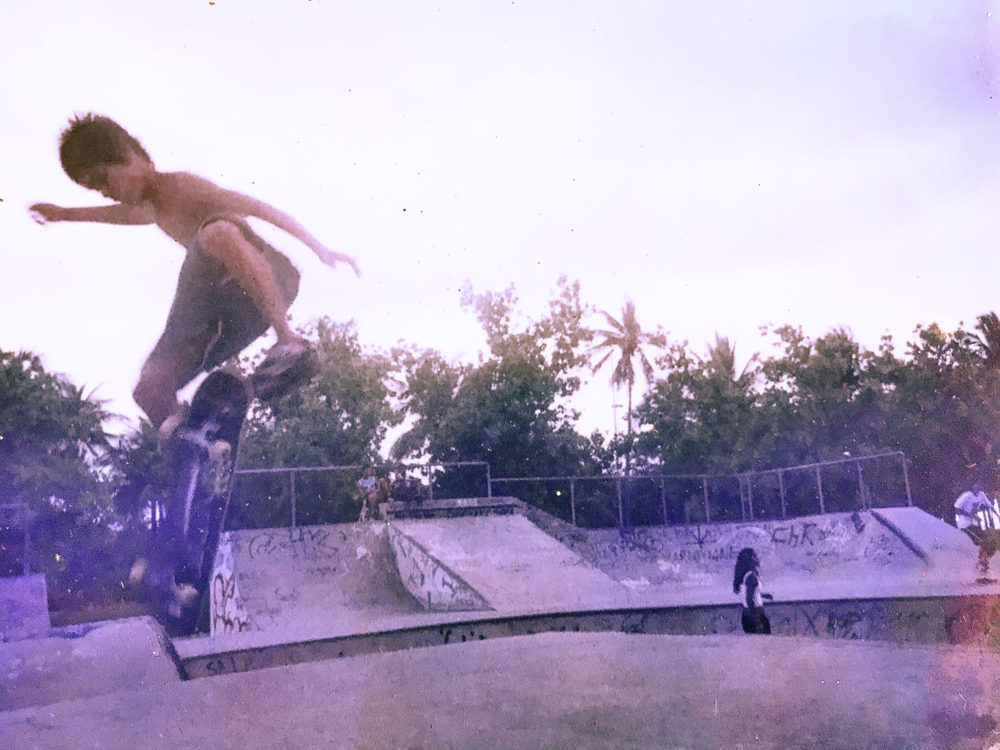
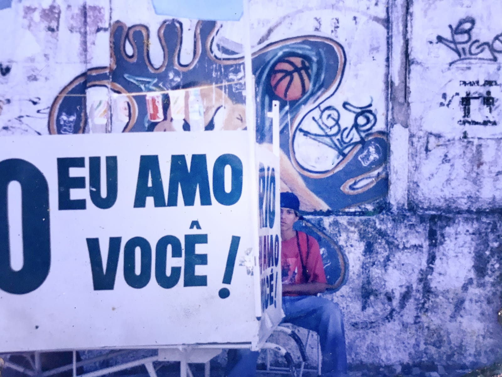
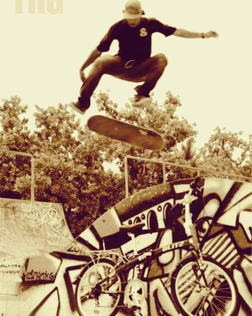
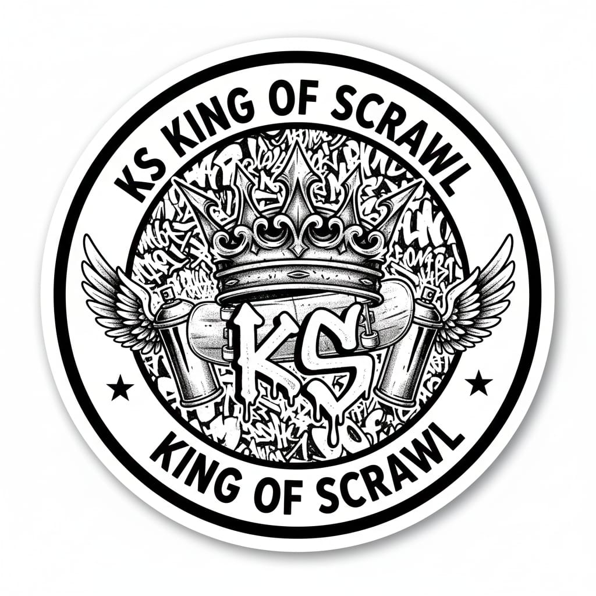

Skate. Estilo. Cultura de rua.
Entre a rua
e o mar.
KIM KS / KING OF SCRAWL
Uma trajetória em movimento.
Do skate à criação, uma vivência de rua.

01 / A trajetória
Cada fase.
Uma história.
Um olhar sobre o caminho de Kim KS.
Explore as fotos e abra cada capítulo.

O começo de tudo

O primeiro skate

Uma vida com o skate

Churrasquinho

Fases da vida

Reconhecimento digital
O significado do skate
02 / Em movimento
Vivência em vídeo.
Skate, rua e a liberdade de seguir
o próprio caminho.
03 / Diário de rua
Ideias que
ganham forma.
Histórias, equipamentos e referências.
O universo de quem vive a cultura.
04 / Moda & expressão
King of
Scrawl.
A marca de moda de Kim KS.
Uma expressão da cultura de rua, do skate e de uma identidade própria.

STICKER PACK OFICIAL05 / Conversas que ficam
Vozes da
mesma rua.
Matérias anteriores
Spain — vivência e rapSetup: peças e performanceKim KS: a estética 90s da King of Scrawl06 / Sobre Kim KS
Uma vida
em movimento.
Kim KS é skatista profissional e está à frente da King of Scrawl, sua marca de moda.
Este espaço reúne sua história, registros de skate, vídeos, matérias e entrevistas. Um arquivo vivo da relação entre rua, mar e criação.
Conheça a essência do skate para Kim ↗